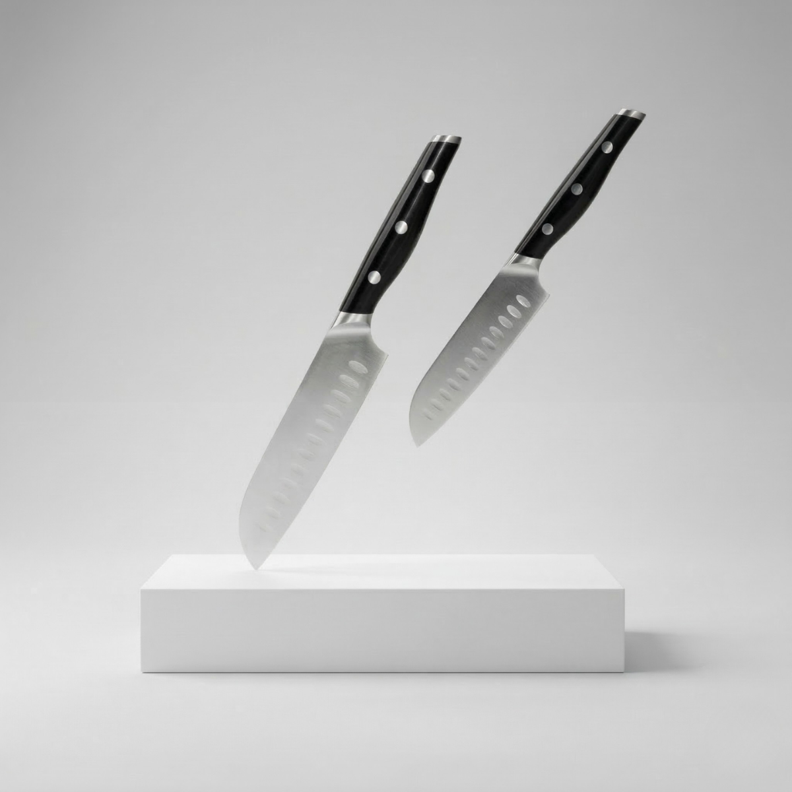
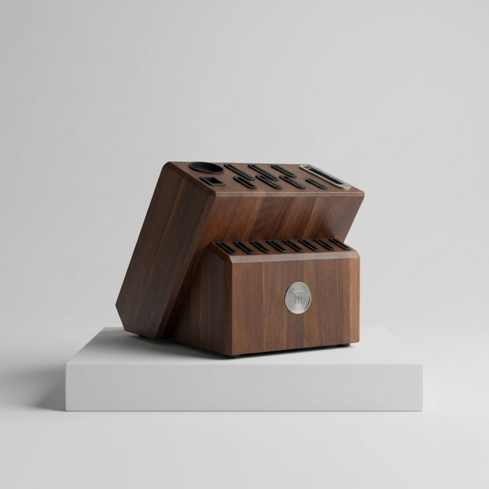
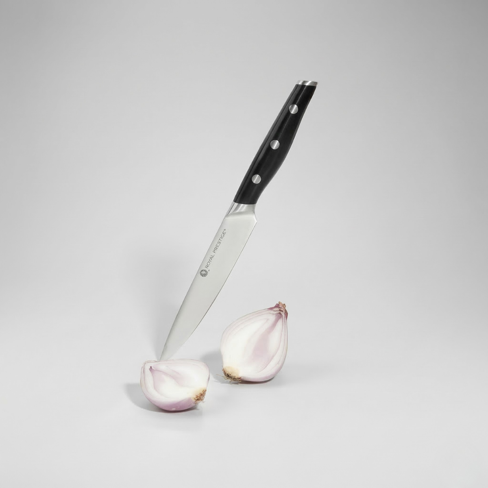
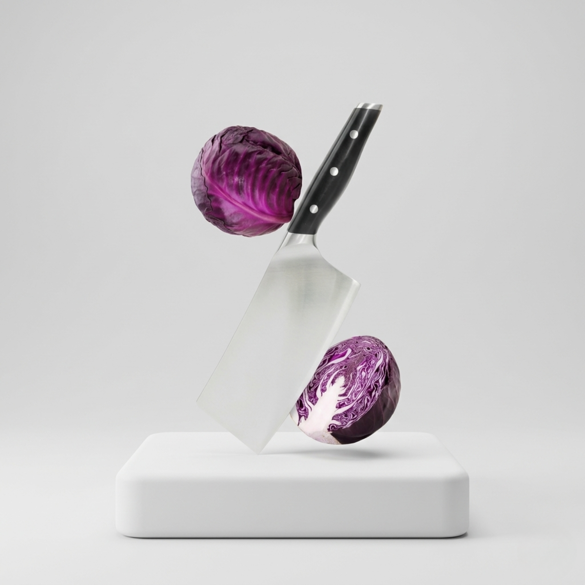
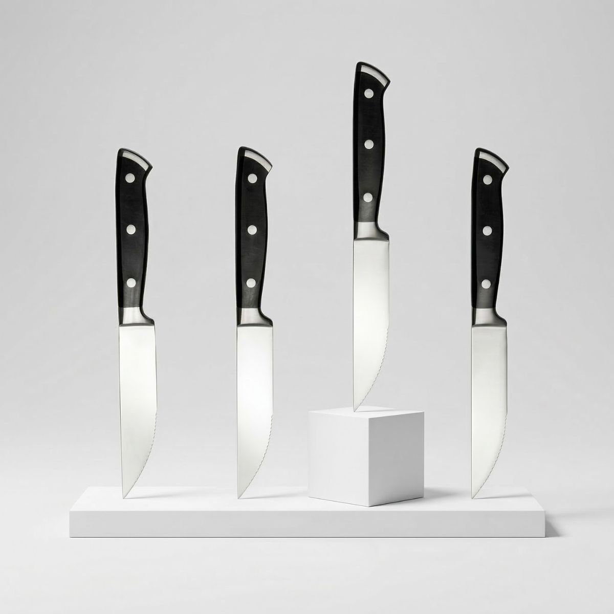
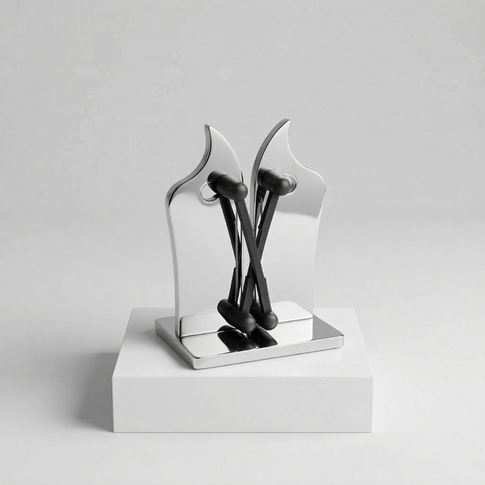
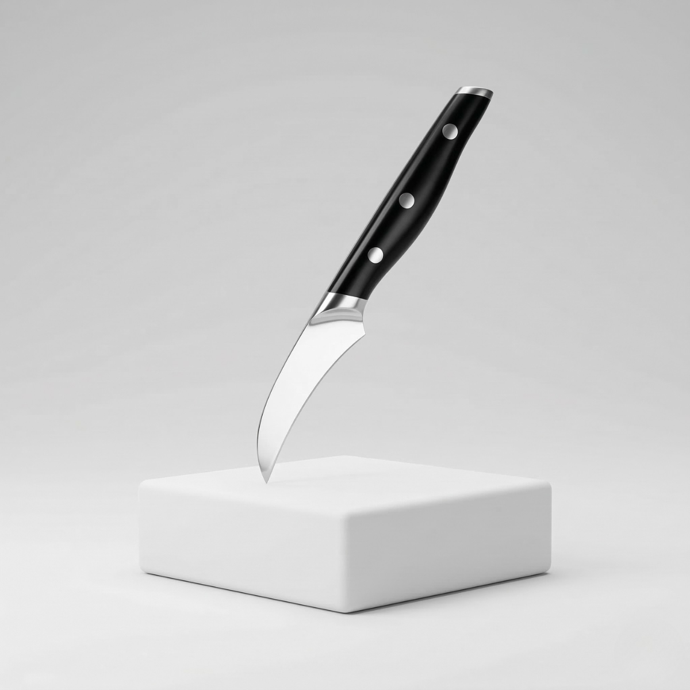

Cuchillos Santoku 5" y 3.5"
Dos tamaños pensados para cortes rápidos, precisos y versátiles dentro de la preparación diaria.
Pieza de precisión para tareas generales y cortes más controlados.

Una selección orientada a complementar la línea principal con piezas individuales y accesorios especializados para precisión, mantenimiento, servicio y organización.
Esta página reúne santoku, multiuso, hacha, churrasco, afilador, pelador y bloque de cuchillos para ampliar la línea con funciones específicas y una presentación coherente.
Las piezas y accesorios de la línea Cuchillos Serie Precisión 3 permiten ampliar la colección con opciones más específicas para cortes de detalle, servicio, mantenimiento y organización.
Esta sección separa claramente los complementos del bloque principal de juegos, haciendo más fácil comparar, entender y elegir cada pieza según su función.
La línea mantiene una estética uniforme, con herramientas orientadas tanto al uso diario como a necesidades más concretas dentro de la cocina.
Aquí se concentra la parte complementaria de la línea, manteniendo separados los juegos principales de los accesorios y piezas individuales.
Las piezas individuales permiten atender tareas específicas con más control, detalle y comodidad dentro de la cocina.
La colección se amplía con herramientas pensadas para servicio, cortes puntuales, mantenimiento y organización.
El afilador complementa la línea ayudando a conservar mejor el desempeño y el filo de los cuchillos.
El bloque de cuchillos aporta orden, resguardo y una imagen más completa dentro del sistema de cuchillería.

Dos tamaños pensados para cortes rápidos, precisos y versátiles dentro de la preparación diaria.
Pieza de precisión para tareas generales y cortes más controlados.

Opción práctica para tareas generales, ideal como apoyo cotidiano en la cocina.
Diseñado para cortes funcionales de uso frecuente.

Pieza robusta orientada a cortes más exigentes y trabajo con mayor firmeza.
Diferente de las piezas ligeras de preparación diaria.

Set complementario para mesa, asados y parrilla, separado del juego de cuchillos para carne del bloque principal.
Set de 4 piezas para servicio especializado.

Complemento de mantenimiento para ayudar a conservar mejor el filo y el desempeño de la colección.
Accesorio clave dentro del sistema de cuchillería.

Pieza pensada para cortes pequeños, pelado y trabajos de mayor precisión visual.
Ideal para tareas finas dentro de la preparación.

Solución para almacenar, proteger y organizar la colección con una presencia más elegante en la cocina.
Complemento visual y funcional para integrar la línea.
Este grupo concentra piezas pensadas para preparación general, cortes puntuales y necesidades más específicas dentro de la cocina.
Estos elementos amplían la colección con servicio de mesa, mantenimiento y organización dentro de un mismo lenguaje visual.
Abre el catálogo de la línea para revisar la presentación general de piezas, accesorios y la organización completa del sistema de cuchillería.
Escríbenos y te ayudamos a identificar qué piezas, qué accesorios y qué combinación encajan mejor con tu estilo de cocina y la colección que deseas completar.